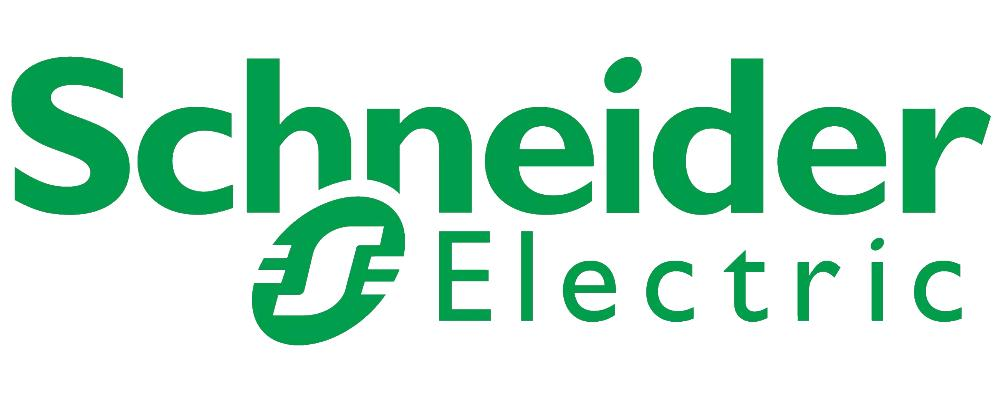
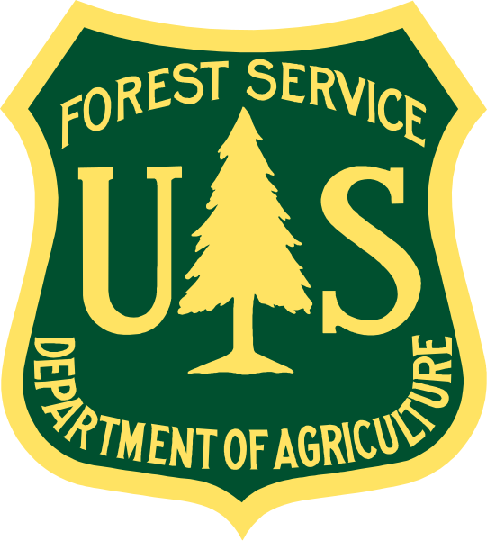
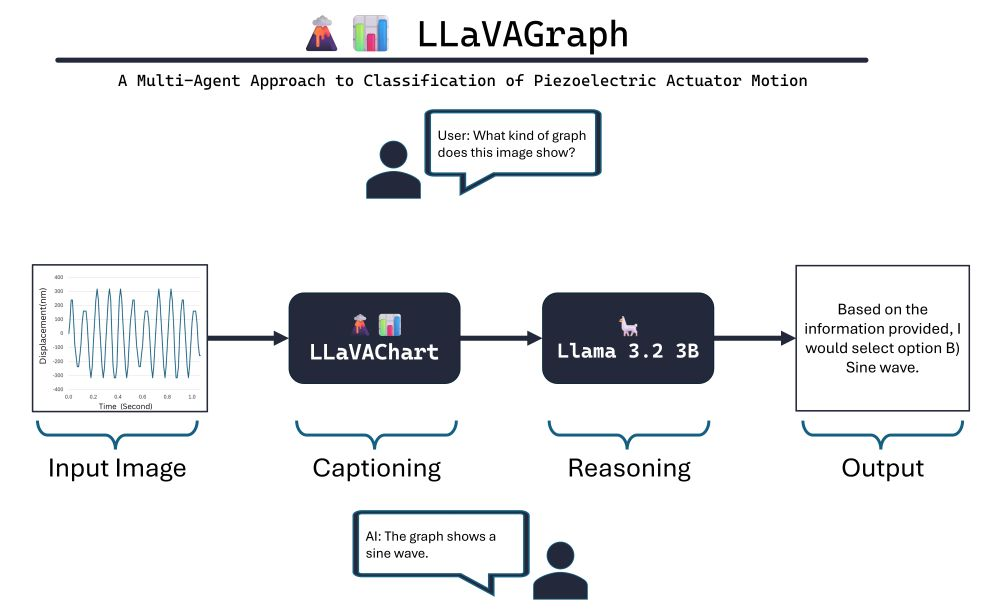
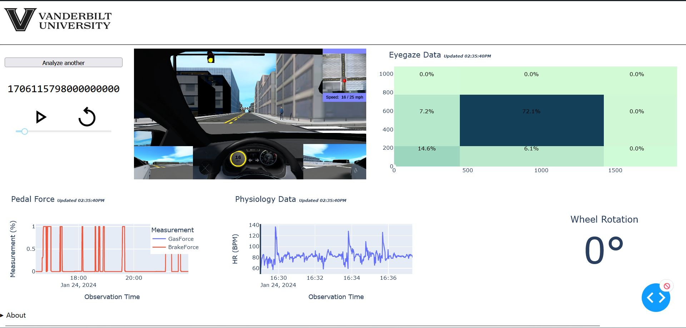
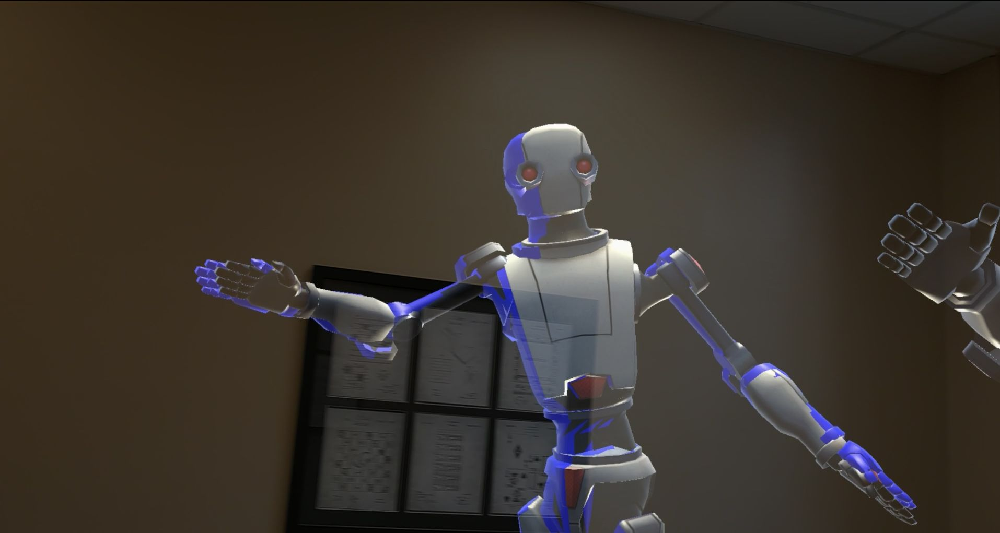
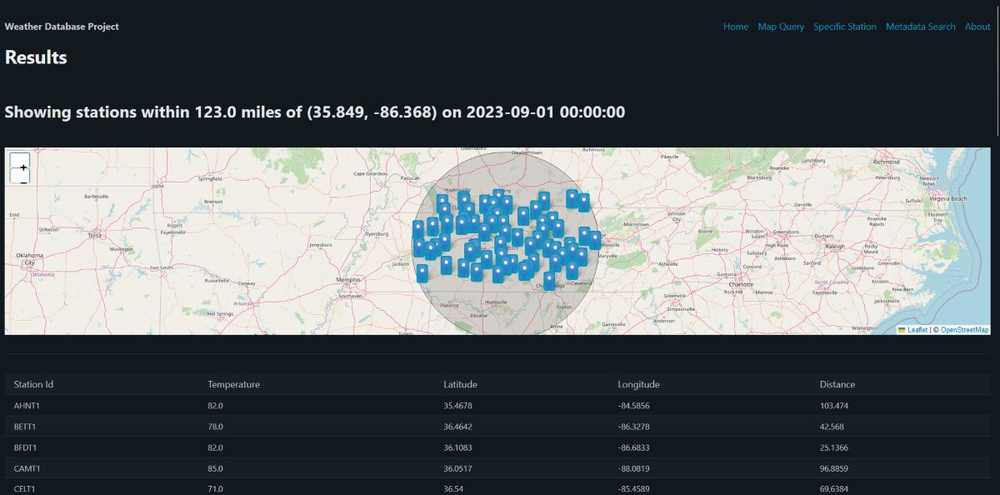
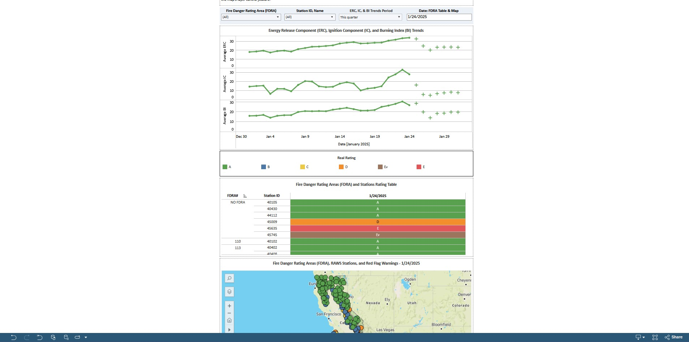
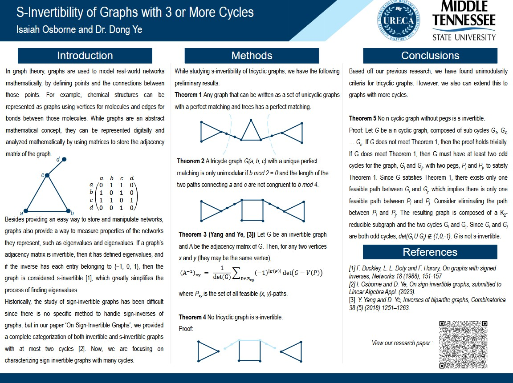

Hello! I'm Isaiah. As a current master's student at Middle Tennessee State University, I love exploring and
solving problems through statistics and programming. Whether it's finetuning LLMs for industrial manufacturing or
analyzing weather data for wildfire management, I am passionate about solving real-world problems through
statistics and programming.
Fun facts about me:
I play the violin in the MTSU Concert Orchestra.
I volunteer as a Living History Reenactor at Stones River National Battlefield.
I love to read!
Education
Data Science, M.S.
Anticipated Graduation Date:December 2025 • GPA:3.96 •
GRE Score:335
Statistics, B.S., with minors in Computer Science and Business Administration
Graduation Date:Spring 2023 • GPA:4.00 •
Academic Honors:Summa cum laude
Presented undergraduate mathematics research in graph theory at the Cumberland Conference on Combinatorics
and Computing, the Copenhagen-Jerusalem Combinatorics Seminar, and multiple student conferences
Selected for and participated in Summer 2023 Middle Tennessee State University Institute of Leadership
Excellence
Recognized as Senior Honors Student in the College of Basic and Applied Science Award Ceremony in Spring 2022
Work Experience
Machine Learning Student Researcher
MTSU Engineering Department (October 2024 - February 2025)
Working with Mechatronics Engineering professor to explore applications of multi-modal LLMs and other
artificial intelligence techniques in industrial manufacturing
Developing and testing an agentic framework using visual large language models and text-based models for
classification of laser displacement signals through a mixture of prompt engineering and finetuning
Finetuning large language models using Huggingface Transformers and Pytorch on MTSU's High
Performance Computing cluster

Data Analytics / Procurement Intern
Schneider Electric Global Supply Chain Management (October 2024 - present)
Supporting the Global Procurement Team in identifying and analyzing impacts of unpaid invoices using
SAP, helping to resolve over $200,000 in past due invoices with the last 5 months
Assisting with developing and tracking supplier sustainability metrics as part of Schneider
Electric's
ongoing sustainability initiatives
Graduate Research Assistant
Vanderbilt University Computer Science / Mechanical Engineering Department, Nashville,
Tennessee (January 2024 - May 2024)
Conducted research on Gaussian splatting, inverse kinematics optimization, and physiology data analysis
using C# and Unity, exploring possible research advancements in augmented reality
Co-authored conference paper on the effects of biometric visualization on autistic individuals' driving
confidence and developed a biometric visualization dashboard using Python
Graduate Teaching Assistant
Middle Tenneessee State Computer Science Department, Murfreesboro, Tennessee (August
2023 - December 2023)
Worked with computer science professor to manage introductory computer science lab section
Graded homework assignments, discussed grading results with professor, and hosted office hours for
students

Business and Technology Intern
United States Forest Service Federal Pathways Program, Vallejo, California (April 2022 -
December 2023)
Designed and implemented Python scripts to parse weather observation data for data analysis and decision
making
Overhauled and optimized existing tools and Python scripts to be used in novel product applications
Created interactive public dashboards in Tableau for fire weather analysis and fire rating risk scoring
Worked with Microsoft Power BI, Power Query, Power Automate, and Esri ArcGIS Pro to create fire weather
analysis and resource management dashboards
Projects

LLaVAGraph
(October 2024 - February 2025)
LLaVAGraph is an agentic framework designed to explore applications of multi-modal LLMs and
other artificial intelligence techniques in industrial manufacturing.
Implemented using Huggingface Transformers, Pytorch, LLaVA v1.5, and Llama 3.2 on MTSU's High
Performance Computing cluster.

Human-Centered Dashboard Design for an Individualized Driving Simulator
(August 2023 - February 2024)
This dashboard was designed for a study conducted by the Vanderbilt Robotics and Autonomous System
Laboratory, allowing visualization of different driving data collected by their in-house driving
simulator.
Implemented using Python, Pandas, and Plotly Dash.

Improving Augmented Reality Pose Redirection Using Potential Functions and Gradient
Descent
(March 2024 - May 2024)
Pose redirection is a significant problem with augmented reality avatars; my project studied ways to
optimize the pose mimicry process using machine learning.
Implemented using C#, Unity, and Microsoft Mixed Reality Toolkit. Deployed on the Hololens 2.

Weather Database Dashboard Project
(August 2023 - December 2023)
In this project, we created a full-stack weather data storage app supporting graphing, mapping, and
spatial queries.
Implemented using Oracle MySQL, Python, and Flask.

Project Activity Level (PAL) and Industrial Fire Precaution Activity Level (IFPAL) -
California Dashboard
(June 2023 - August 2023)
Main developer for both PAL dashboard and data collection backend.
Implemented using Tableau, Python, and Pandas.

Sign Invertibility for Graphs - Mathematics Research
(January 2022 - May 2023)
Researched new applications of sign invertibility for various families of graphs.